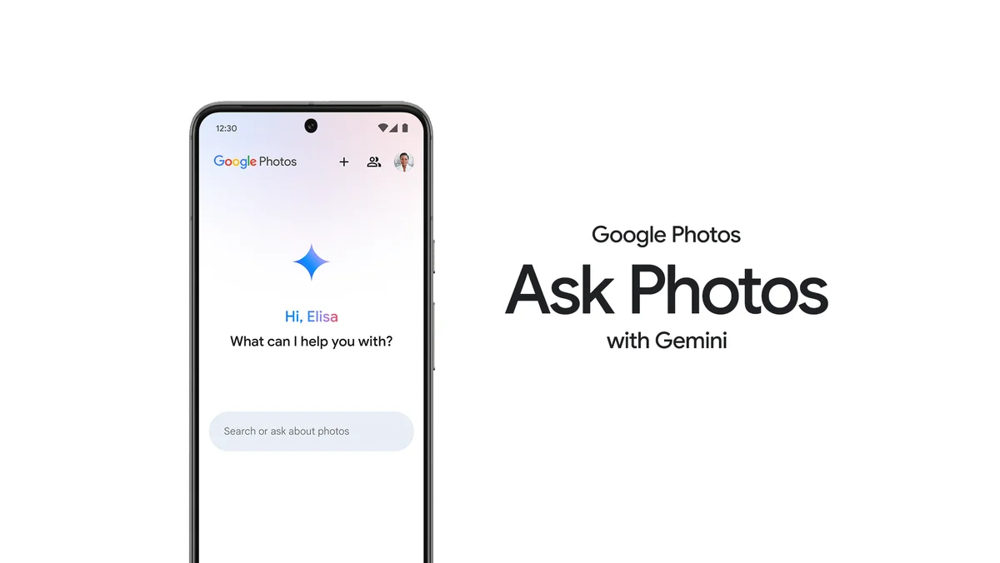
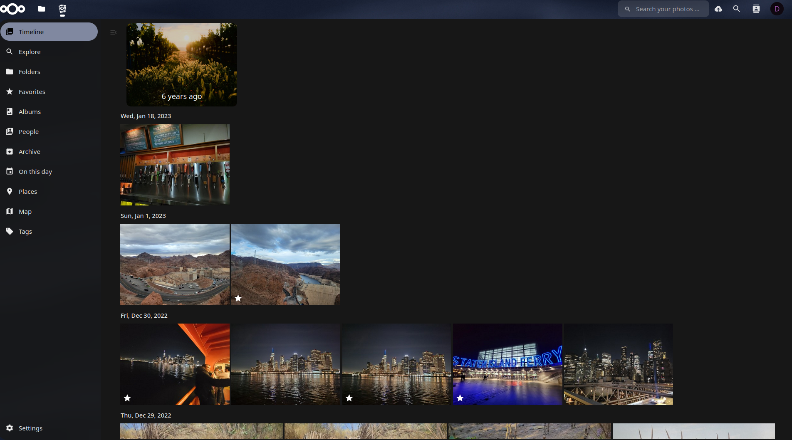
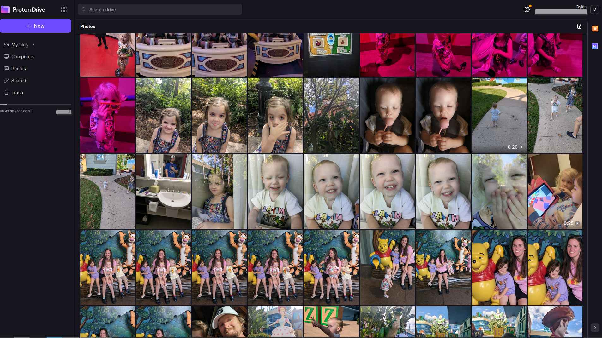

Google Spyware??

Dylan Worth
May 14, 2024
The Google Gemini Conundrum: Privacy vs. Convenience

When Google announced its Gemini AI for Google Photos, many users, including myself, felt a chill run down their spines. Google Gemini promises a new era of AI capabilities, with enhanced performance and the ability to process vast amounts of data efficiently. While this sounds impressive, the implications for privacy are concerning.
The Privacy Nightmare
Google Gemini has unparalleled access to your personal photos, allowing it to analyze and understand your visual data deeply. This level of access is alarming, especially given past incidents where companies have been caught snooping through users' personal photos. Imagine an AI that not only knows what you look like but also can piece together your life story from your photos and search history. It's like inviting Big Brother into your photo album.
The Privacy Problem with Google Photos
Google Photos, enhanced by Gemini, offers impressive features like Magic Eraser and Photo Unblur without needing a subscription. However, the trade-off is your privacy. The AI's ability to analyze and store data raises significant concerns. Google assures us that safety and ethics are at the core of their AI development, but past privacy breaches make it hard to trust these reassurances fully.
Exploring Alternatives: Nextcloud Memories
If you're like me, the idea of a tech giant having this much control over your personal data is unnerving. This is where Nextcloud Memories comes in. Nextcloud offers a self-hosted solution, meaning you control where your data is stored and who has access to it. Nextcloud Memories provides a similar photo management experience without the privacy trade-offs. Let's dive deeper into what makes Nextcloud Memories a compelling alternative.
What is Nextcloud Memories?

Nextcloud Memories is a photo management app that integrates seamlessly with the Nextcloud ecosystem. It offers features comparable to Google Photos, such as:
- Photo Organization: Automatically sorts your photos by date, location, and custom tags.
- Albums and Collections: Create and manage albums easily, just like in Google Photos.
- Search and Filtering: Powerful search capabilities allow you to find photos based on metadata, tags, and even content recognition.
Privacy and Security
One of the standout features of Nextcloud Memories is its commitment to privacy. By self-hosting your Nextcloud instance, you have complete control over your data. This means:
- No Third-Party Access: Your photos and data are not shared with or accessible by third parties.
- End-to-End Encryption: Ensures that your data is secure both at rest and in transit.
- Compliance: Nextcloud allows you to comply with data protection regulations like GDPR, which can be crucial for businesses and privacy-conscious users.
Customization and Flexibility
Nextcloud Memories offers unparalleled customization options. Since it is open-source, you can modify and extend its capabilities to suit your specific needs. This flexibility is something proprietary services like Google Photos cannot offer. Additionally, Nextcloud integrates with various other apps in the Nextcloud ecosystem, providing a comprehensive suite of tools for managing not just your photos, but all your digital data.
Community and Support
The Nextcloud community is vibrant and active. You can find support through community forums, extensive documentation, and even professional support services offered by Nextcloud GmbH. This community-driven approach ensures that the app is continually improving and adapting to user needs.
Proton Drive: A Secure Alternative

Another option is Proton Drive. Known for its robust encryption and privacy-first approach, Proton Drive ensures that your data is secure. Proton Drive's photo backup feature is available in the free plan, allowing users to back up their photos with end-to-end encryption. This feature ensures that your photos and videos are encrypted on your device before they are stored on Proton's servers, keeping your data safe from prying eyes.
However, Proton Drive lacks the advanced photo management features that make Google Photos so appealing. It offers basic photo backup and storage capabilities, but if you want an organized photo library with advanced search and categorization, you might need to consider other options like Nextcloud Memories.
Extracting Your Data from Google:
If you're ready to part ways with Google Photos, the first step is to extract your data. Google Takeout is a service that allows you to download your data from Google services. Here’s how you can do it:
- Go to Google Takeout: Visit the Googe Takeout page.
- Select Data to Export: Choose Google Photos and any other data you want to export.
- Choose Export Format: Decide how you want your data to be delivered. You can opt for a one-time download or schedule periodic exports.
- Download Your Data: Once the export is ready, download your data to your device.
Final Thoughts
While Google Gemini's capabilities are impressive, they come at a significant cost to privacy. Alternatives like Nextcloud Memories and Proton Drive offer more control over your data, but they may lack some of the convenient features provided by Google Photos. As users, we must weigh the benefits of advanced AI against the risks to our privacy and choose the solutions that best align with our values.
Navigating the digital world means making informed decisions about who we trust with our personal information. By exploring alternatives and taking control of our data, we can enjoy the benefits of modern technology without compromising our privacy.